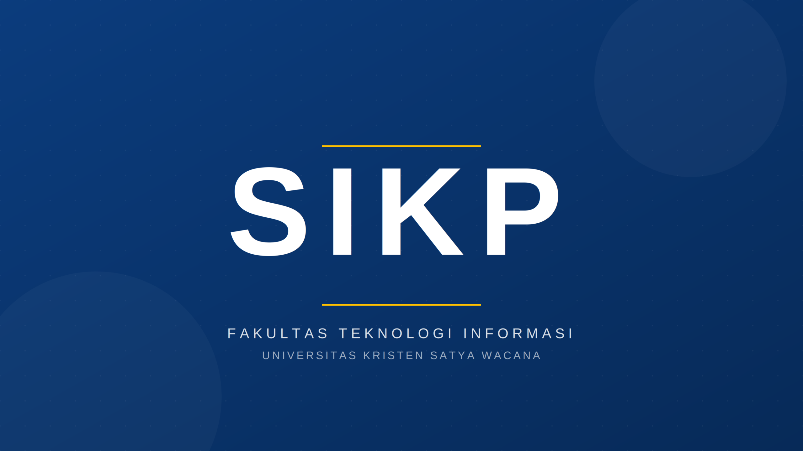

Deskripsi & Rundown AcaraDescription & Schedule
Sesi berbagi bersama alumni dan dosen pembimbing mengenai cara menyusun dokumentasi proyek kampus agar siap ditinjau perekrut. Sharing session with alumni and faculty advisors on documenting campus projects for technical recruiters.
10.00 - 11.15 WIB
Pemaparan materi portofolio & riset terbukaKeynote on portfolios & open research
11.15 - 12.30 WIB
Bedah CV dan tanya jawab pesertaCV review and audience Q&A